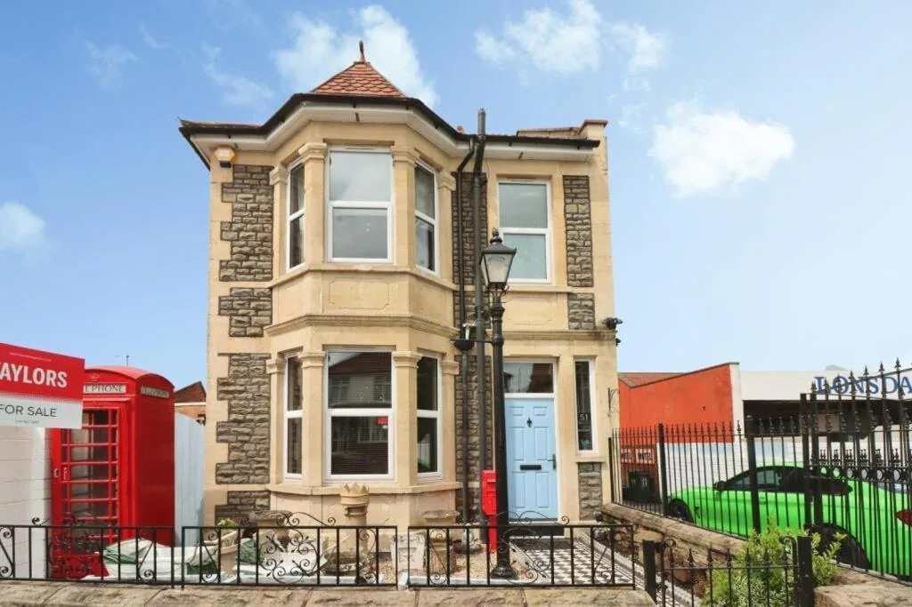

{kind=link}
{kind=link}
{kind=link}
{kind=link}
{kind=link}
Dormitorio 1
Una cama doble.
- Cama doble× 1

Bristol · Casa de vacaciones completa
Una casa amplia de tres dormitorios para seis huéspedes, con dos baños, jardín privado y aparcamiento gratuito en la propiedad.
Distribución, servicios y normas de la casa en un solo lugar.
De un vistazo
Una amplia casa de vacaciones victoriana en Bristol con tres dormitorios, dos baños, un salón cómodo, una cocina totalmente equipada y un jardín privado. El Wi-Fi gratuito y el aparcamiento privado en la propiedad ofrecen una base práctica para familias o grupos de hasta seis huéspedes.
La estancia incluye tres dormitorios, un salón, dos baños y un jardín privado.
Hay una plaza de aparcamiento privada junto a la casa.
Cabot Circus, las estaciones de Bristol y los principales lugares de interés están a poca distancia en coche.
Distribución de dormitorios y tipos de cama disponibles.
Una cama doble.
Una cama doble.
Una cama doble.
Un sofá cama.
Equipamiento agrupado para consultarlo rápidamente.
Llegada, aparcamiento y normas aplicables durante la estancia.
Dirección, cómo llegar y lugares útiles cercanos.
51 Woodland Way, Bristol, BS15 1QH, Reino Unido
Cómo llegarCabot Circus
Compras
Estación Bristol Temple Meads
Transporte
Estación Bristol Parkway
Transporte
Catedral de Bristol
Lugar de interés
Clifton
Lugar de interés
Aeropuerto de Bristol
Aeropuerto
Elige una fecha en línea o utiliza una opción de contacto disponible.
Reserva de demostración
Día
Hora
Cita demo seleccionada
El modo demo no envía datos. En producción se sustituye por un sistema de reservas real.
La entrada es de 15:00 a 21:00 y la salida de 08:00 a 11:00. Indique con antelación la hora prevista de llegada.
Sí. Hay aparcamiento privado gratuito junto a la casa.
Se admiten niños de todas las edades. No hay cunas ni camas supletorias disponibles.
No. No se permiten mascotas, fumar, fiestas ni eventos de grupo similares.